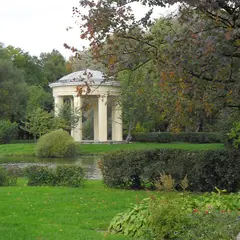

У метро · Центр
Куда сходить у метро «Нарвская»
Для 5 мест из нашего каталога ближайшая станция — «Нарвская» (Центр): 2 места для прогулки, 1 бар, 1 ресторан или кафе и 1 баня или спа. Например, «AF Brew Taproom», «Парк Екатерингоф» и «Тракторная улица». Недорогих, примерно до 1 500 ₽ на человека, — 4. 1 готовый план проходит через эту станцию — например, «Парение с мастером и тапрум AF Brew», с маршрутом пешком между точками.
- 5 мест
- 1 план
Места у метро «Нарвская» 5
Курляндская ул., 48
Новое
Флагманский тапрум одной из сильнейших питерских пивоварен: просторный зал, много кранов и дружелюбная публика.
Подробнее и маршрут: AF Brew TaproomПозвать сюда: AF Brew Taproom
Фото: НАндреев, CC BY-SA 4.0 · Wikimedia Commons

Лифляндская ул., 12
Новое
Один из старейших парков города: пруды, петровские каналы и тихие аллеи недалеко от Нарвской.
Подробнее и маршрут: Парк ЕкатерингофПозвать сюда: Парк Екатерингоф
Фото: Kaat2001, CC BY-SA 3.0 · Wikimedia Commons
Тракторная ул., 2/8 (у пр. Стачек)
Новое
Шестнадцать светлых домов 1925–1927 годов с полуарками между корпусами, скруглёнными лестничными башнями и разными балконами; ось замыкает школа Никольского.
Подробнее и маршрут: Тракторная улицаПозвать сюда: Тракторная улица
Фото: Артём Светлов, CC BY 4.0 · Wikimedia Commons
наб. Обводного канала, 146
Новое
Камерный банный клуб у Обводного с отдельными парными: парение с мастером, массаж и чай после — дорогой подарок на особый вечер.
пл. Стачек, 9
Новое
Пышечная у Нарвской, открыта до одиннадцати вечера. Можно заглянуть с друзьями после прогулки.
Подробнее и маршрут: Дом Ленинградской пышкиПозвать сюда: Дом Ленинградской пышки


Готовые планы 1
- Siberia · Приватная баня · м. Нарвская
- 7 минут пешкомAF Brew Taproom · Крафтовый бар
Камерный банный клуб у Обводного: отдельная парная и парение с мастером, а потом 7 минут пешком — флагманский тапрум AF Brew.
Открыть план: Парение с мастером и тапрум AF BrewПозвать сюда: Парение с мастером и тапрум AF Brew
Фото: НАндреев, CC BY-SA 4.0 · Wikimedia Commons
Как позвать
- Выбери план, место или событие — в карточке адрес, цены и маршрут в Яндекс Картах.
- Нажми «Позвать сюда» — соберётся приглашение-игра для свидания или голосование для компании.
- Отправь ссылку в любой мессенджер: тебе ответят, а компания отметит, куда и когда может. Бесплатно и без регистрации.